Привет, меня зовут Настя. Мне 19 лет. Я учусть в колледже при ИжГТУ на 4 курсе, на специальности "Прикладная информатика", а по профессии буду Техник-программист. Я живу в городе Ижевск. Училась в школе №31. У меня много хобби, но я расскажу про самые любимые...
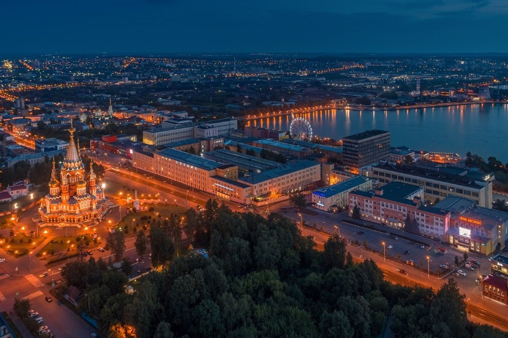
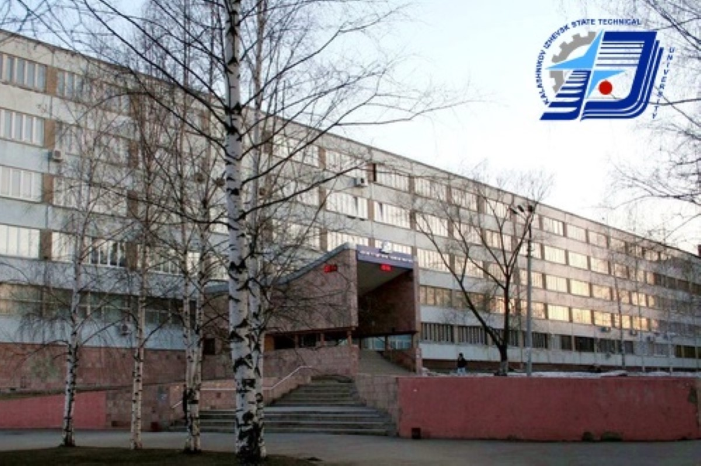
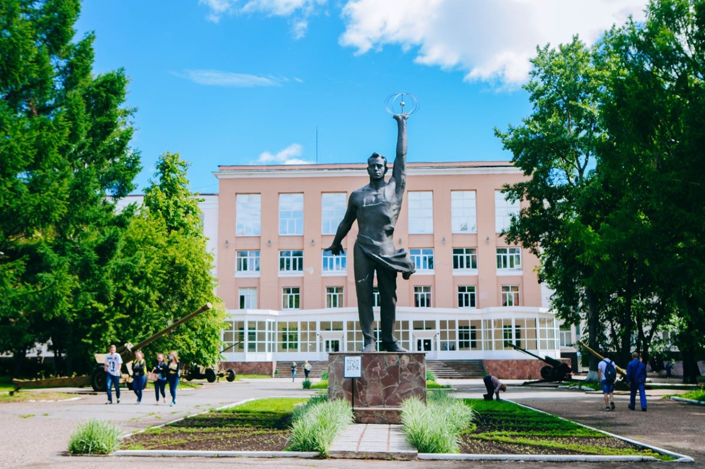
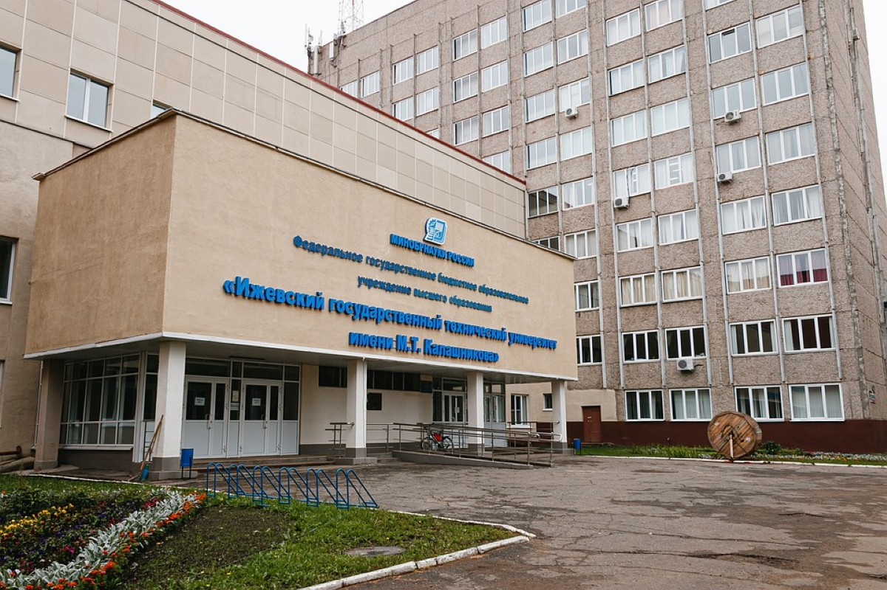
Еще с детства я люблю рисовать, а также различные творческие хобби, например, лепить из глины, бисероплетение, оригами, канзаши и т.д. Я даже ходила в художественную школу несколько лет и мечтала быть дизайнером одежды. Сейчас я немного рисую на графическом планшете.
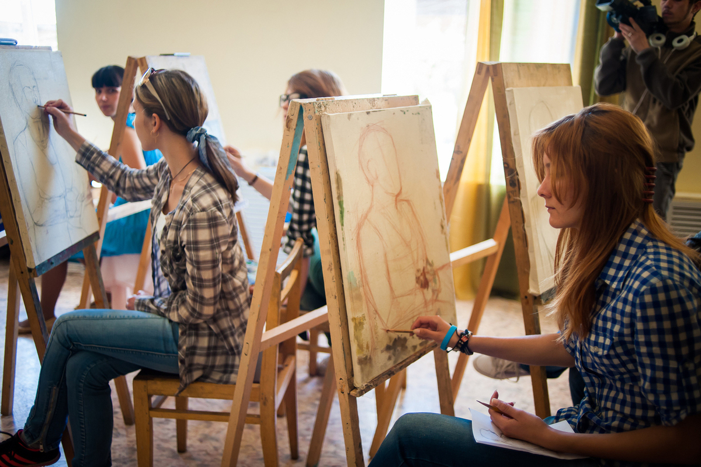
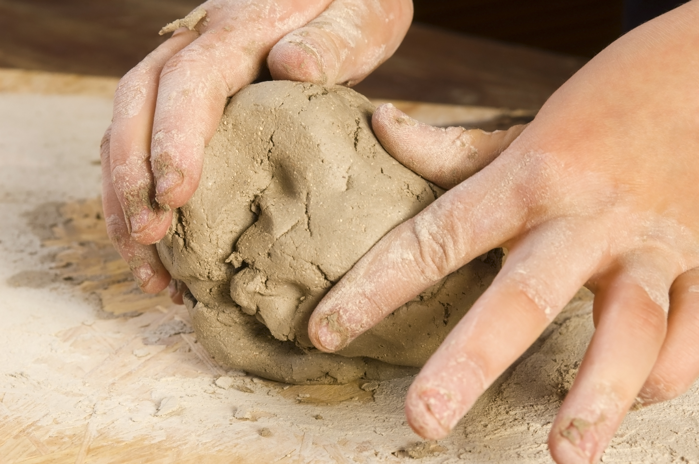
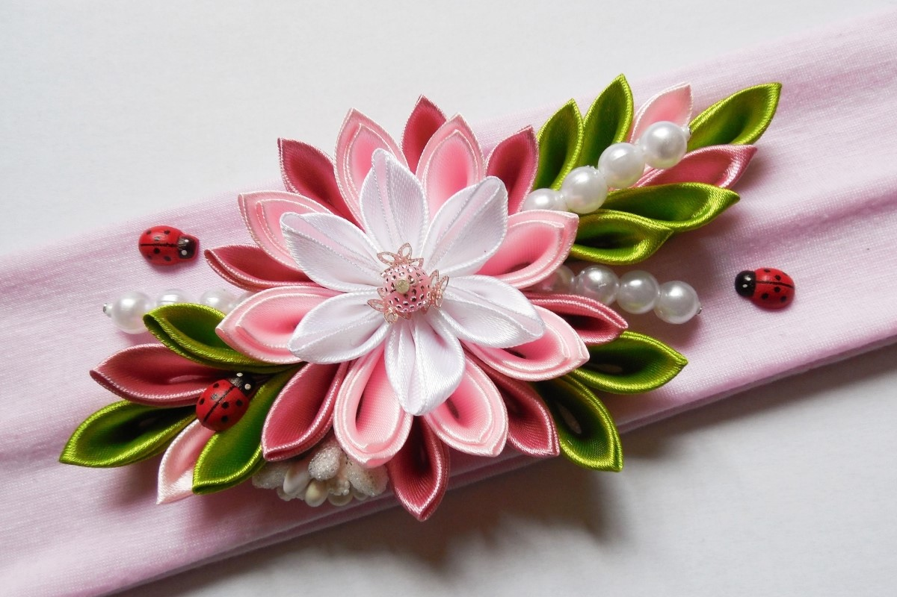
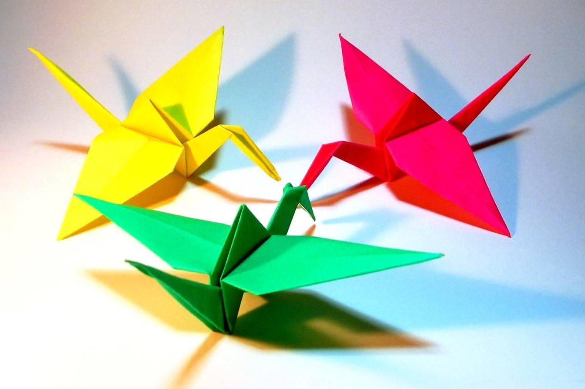
Но что-то изменилось и я поступила на программиста...
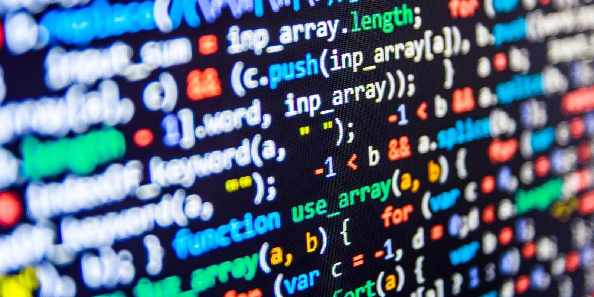
Также я очень люблю читать книги, фанфики, мангу, разные новеллы и т.д. В основном я читаю фантастику и фэнтези. Мои любимые книги это Жестокий принц, Часодеи, Королевство шипов и роз, Орудия смерти и т.д.
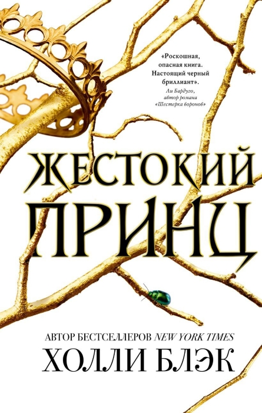
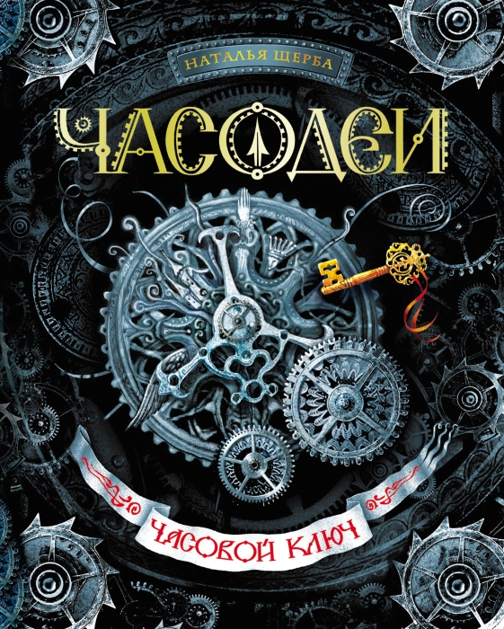
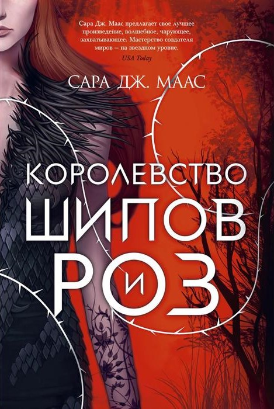
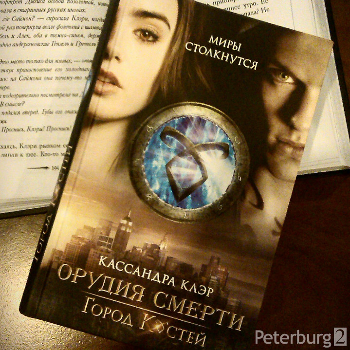
Вообще я точно не знаю кем хочу работать в будущем, так как в ИТ очень много различных сфер. Возможно хочу создавать сайты или игры, возможно хочу работать графическим дизайнером или мультипликатором. Я еще не решила...
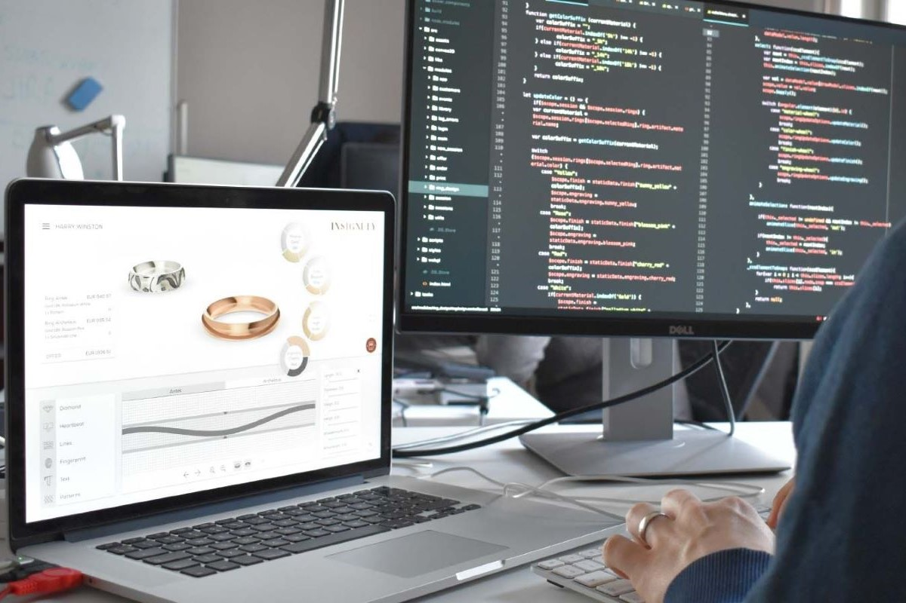
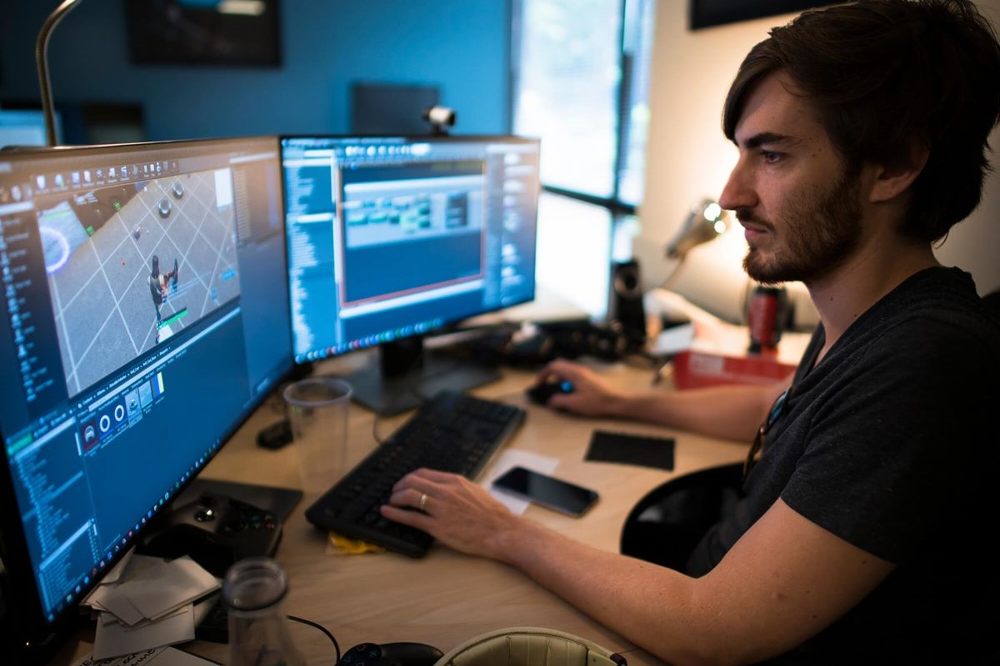
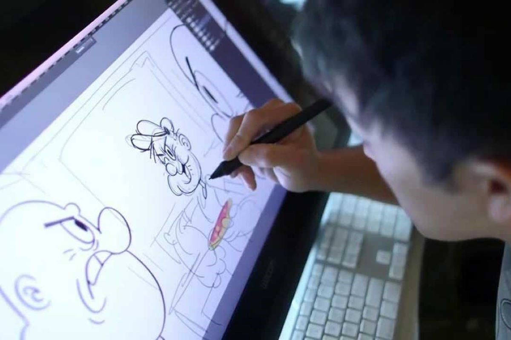